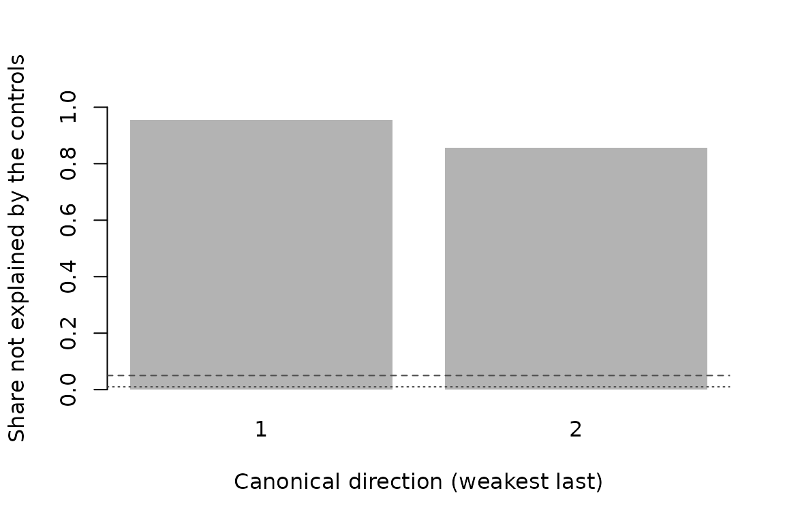
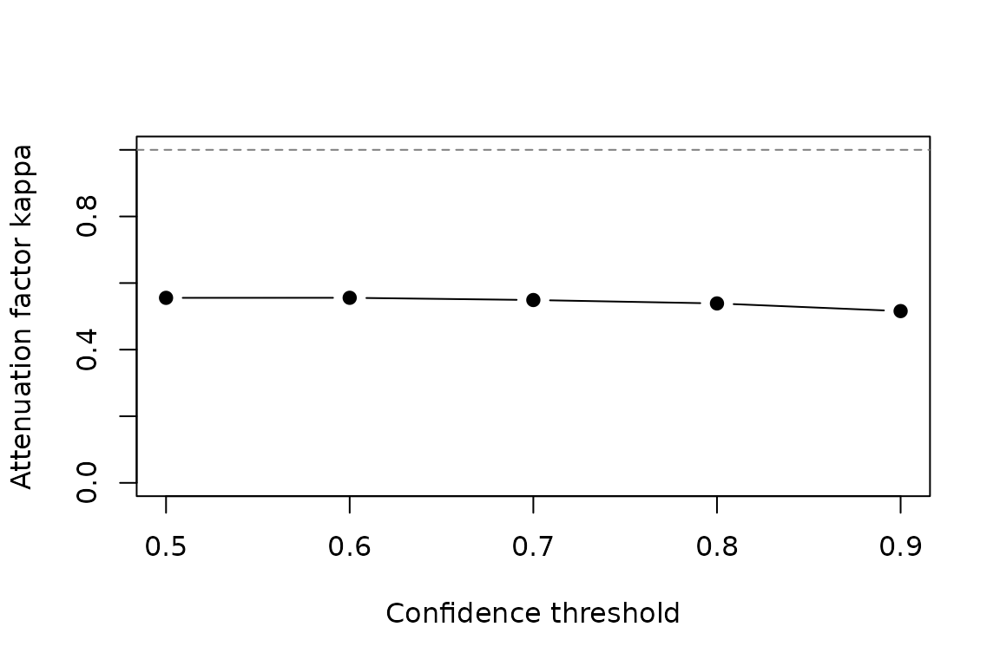

The problem
Suppose we want the difference in an outcome between groups, but the group of each observation is not recorded. A classifier trained on a small labelled sample gives, for every observation, the probability of belonging to each group. The common next step is to assign each observation its most likely group, or the group whose probability passes a confidence threshold, and to run a regression on these labels.
That step loses information. Observations whose probabilities are close to each other receive different labels, and uncertain observations are treated as certain. The estimated group difference is distorted (for two groups, typically attenuated), and its confidence interval can miss the true value far more often than the nominal level allows.
softcats keeps the categories soft: it estimates the group difference from the probabilities themselves.
A first example
sim_softcats() simulates data in which the probabilities
are calibrated, the true effects are known and a labelled subsample is
flagged. Here there are three groups, A (the reference),
B and C, three controls and an outcome
y.
d <- sim_softcats(n = 3000, K = 3, seed = 1)
head(d[, c("y", "x1", "x2", "x3", "prob_A", "prob_B", "prob_C")])
#> y x1 x2 x3 prob_A prob_B
#> 1 -0.774710178 -0.6264538 0.7391149 -0.61882708 0.003214023 2.555143e-08
#> 2 1.558660553 0.1836433 0.3866087 -1.10942196 0.355728883 4.764060e-03
#> 3 1.970219346 -0.8356286 1.2963972 -2.17033523 0.396786593 5.859465e-06
#> 4 2.484319245 1.5952808 -0.8035584 -0.03130307 0.172224340 8.275779e-01
#> 5 -0.009499771 0.3295078 -1.6026257 -0.26039848 0.066594108 9.310943e-01
#> 6 0.559134744 -0.8204684 0.9332510 0.53443047 0.270930631 7.274540e-01
#> prob_C
#> 1 0.996785952
#> 2 0.639507057
#> 3 0.603207548
#> 4 0.000197751
#> 5 0.002311570
#> 6 0.001615416
attr(d, "tau")
#> B C
#> 1.0 -0.5soft_lm() takes a formula with the outcome and the
controls, and the class probabilities. The probabilities can be given as
column names, a one-sided formula, a matrix, or, for two groups, a
single vector.
fit <- soft_lm(y ~ x1 + x2 + x3, probs = c("prob_A", "prob_B", "prob_C"),
data = d, learner = lrn_lm(degree = 3), seed = 1)
summary(fit)
#> Regression on predicted categories (calibrated soft labels)
#>
#> Call:
#> soft_lm(formula = y ~ x1 + x2 + x3, probs = c("prob_A", "prob_B",
#> "prob_C"), data = d, learner = lrn_lm(degree = 3), seed = 1)
#>
#> Reference category: A Categories: A, B, C
#> Observations: 3000
#> Cross-fitting: 5 folds, 1 split Learner: lm (degree 3)
#> Standard errors: heteroskedasticity-robust (HC0)
#>
#> Estimate Std. Error z value Pr(>|z|)
#> B 0.9772 0.1119 8.730 < 2e-16 ***
#> C -0.5135 0.1099 -4.671 2.99e-06 ***
#> ---
#> Signif. codes: 0 '***' 0.001 '**' 0.01 '*' 0.05 '.' 0.1 ' ' 1
#>
#> Score information beyond the controls
#> Share of score variance not explained by the controls: 0.954, 0.857
#> Condition number of E[aa']: 11.7The coefficients are differences from the reference group
A, adjusted for the controls. The last lines of the summary
report how much of the variation of the probabilities the controls do
not explain; this is the information the estimate uses, discussed
below.
compare_hard() shows what the most-likely-label
regression would have given on the same data.
h <- compare_hard(fit)
h
#> Soft probabilities versus predicted labels (most likely category)
#> Difference from reference category 'A'
#>
#> method term estimate std.error conf.low conf.high
#> soft B 0.977 0.1120 0.758 1.200
#> soft C -0.514 0.1100 -0.729 -0.298
#> hard (cross-fitted) B 0.490 0.0662 0.361 0.620
#> hard (cross-fitted) C -0.494 0.0648 -0.621 -0.366
#> hard (OLS) B 0.490 0.0662 0.360 0.620
#> hard (OLS) C -0.489 0.0648 -0.616 -0.362
#>
#> Distortion matrix A (the cross-fitted hard estimate converges to A tau):
#> B C
#> B 0.532 -0.132
#> C -0.134 0.540
#> Retention along the eigen-directions of E[aa']:
#> dir1 dir2
#> 0.669 0.403
#>
#> Implied bias and coverage of nominal 95% hard-label intervals:
#> term implied_bias std.error_hard coverage
#> B -0.389 0.0662 4.40e-05
#> C 0.106 0.0648 0.628For group B the hard-label estimate is 0.49, about half
of the true value of 1, and its interval excludes the true value. For
group C it is -0.49, close to the true value of -0.5.
Replacing the probabilities by labels is a coarsening of the
probabilities, and with several groups its effect is a matrix: under the
assumptions below, the cross-fitted hard-label estimates converge to the
distortion matrix times the true effects, so the estimate for one group
also picks up the effects of the others through the off-diagonal
entries. With the estimated matrix, the limits are 0.60 for
B and -0.40 for C. Both groups are attenuated;
for C the off-diagonal term moves the limit towards the
true value, and the estimate in this sample is closer still because of
sampling variation. Without the probabilities, neither the size nor the
direction of the hard-label error can be anticipated.
The last table translates the distortion into coverage. By an
asymptotic approximation, nominal 95% intervals around the cross-fitted
hard-label estimates would contain the true effect with probability of
about 0.00 for B and 0.63 for C in repeated
samples. The retention coefficients show that the distortion is not the
same along the two directions of the score information.
What the method assumes
The estimand is in
with unrestricted, so is the partial association between group (relative to the reference) and the outcome given the controls. It is not a causal effect. Three conditions make it estimable from the probabilities :
- Conditional calibration. : among observations with the same probabilities and the same controls, the share in group equals . This is stronger than the marginal calibration that Platt scaling or isotonic regression target.
- Information beyond the controls. The classifier must use features that are not controls, so that no linear combination of the non-reference probabilities is a function of the controls. If the classifier used only the controls, the probabilities would be a function of the controls and the effect would not be identified.
- No direct effect of the extra features. The classifier features that are not controls may affect the outcome only through the group.
Under these conditions, with and ,
and soft_lm() solves the sample version of this
equation. The two nuisance functions are estimated by cross-fitting, and
the equation is Neyman-orthogonal in both, so moderate errors in the
nuisances do not bias the estimate to first order. Standard errors are
robust sandwich estimates.
The approach is related to regression calibration in the measurement-error literature, which replaces an error-prone variable by its conditional expectation. The difference is that the probabilities are first purged of the controls; only the residual variation identifies the effect, and calibration given the controls is what makes that residual variation informative.
Choosing a learner
The nuisances
and
are usually non-linear, and the quality of the estimate depends on how
well they are estimated. The default learner is a random forest
(lrn_ranger()). lrn_lm() fits polynomials and
is fast and deterministic; lrn_glmnet() fits a penalised
polynomial; lrn_custom() accepts any fitting and prediction
functions. Different learners can be used for the two nuisances.
fit_rf <- soft_lm(y ~ x1 + x2 + x3, probs = ~ prob_A + prob_B + prob_C,
data = d, learner = lrn_ranger(num.trees = 200),
n_rep = 5, seed = 1)
coef(fit_rf)
#> B C
#> 0.9457734 -0.4746345
fit_mix <- update(fit, learner = list(m = lrn_ranger(num.trees = 200),
r = lrn_lm(degree = 3)))
coef(fit_mix)
#> B C
#> 0.9530089 -0.4933937Repeating cross-fitting with new fold splits (n_rep)
reduces the dependence on a particular split; the reported variance then
includes the spread across splits. With random forests, five or more
splits are advisable.
Diagnostics
Information beyond the controls
score_spectrum() decomposes
.
For each direction it gives the share of the variance of the
probabilities that the controls do not explain. A share close to zero
means that the corresponding contrast is weakly identified, and the
eigenvector shows which groups it involves.
score_spectrum(fit)
#> Score information beyond the controls
#>
#> Canonical shares not explained by the controls (largest first):
#> 1 2
#> 0.954 0.857
#>
#> Eigenvalues of E[aa'] (eigenvectors dir1, dir2, ...):
#> dir1 dir2
#> 0.2070 0.0176
#>
#> Condition number: 11.7
#> Weakest direction of E[aa'] (loadings on categories, relative to 'A'):
#> B C
#> 0.713 0.701
#>
#> Smallest share 0.857 is adequate.
plot(fit, which = "spectrum")
Checks on the labelled sample
Calibration and the absence of direct effects can be tested where the group is observed. Here the flagged subsample plays that role.
lab <- d[d$labelled, ]
calibration_check(probs = ~ prob_A + prob_B + prob_C, group = "group",
data = lab, controls = ~ x1 + x2 + x3)
#> Calibration check on 573 labelled observations
#>
#> category ECE Brier overall p conditional p max gap net of noise
#> A 0.0396 0.131 0.578 0.813 0.0825 0.00000
#> B 0.0438 0.113 0.498 0.813 0.1300 0.00112
#> C 0.0374 0.131 0.243 0.813 0.1070 0.00000
#>
#> Largest calibration gap beyond sampling noise (score bins): 0.00112
#> p-values are from Holm-adjusted likelihood-ratio tests of perfect calibration
#> (polynomial of degree 3 in the logit).
exclusion_test(y ~ x1 + x2 + x3, group = "group", extra = ~ z, data = lab)
#> Direct-effect test for the classifier features (573 labelled observations)
#>
#> term estimate std.error statistic p.value
#> z -0.0793 0.0568 -1.4 0.162
#>
#> Wald chi-squared = 1.95 on 1 df, p = 0.162 (HC1 standard errors)The calibration check reports a likelihood-ratio test of perfect
calibration and a test of calibration given the controls. The method
needs calibration given the controls, which the first test checks as a
whole. The second test isolates miscalibration that depends on the
controls: if it rejects, recalibrating the scores alone does not help,
and they should be recalibrated on the scores and the controls together,
as recalibrate() does (see below).
How much calibration error the conclusion tolerates
If the probabilities are miscalibrated by at most
in every category, the bias of each coefficient is bounded by
times a factor that drift_sensitivity() estimates. Its
robustness values give the drift at which the bound equals the estimate,
and the drift at which the confidence interval widened by the bound
reaches zero.
drift_sensitivity(fit, delta = 0.02)
#> Sensitivity to calibration drift |eta| <= delta
#>
#> term estimate std.error bias_per_delta rv rv_ci bound conf.low conf.high
#> B 0.977 0.112 6.65 0.1470 0.1140 0.133 0.625 1.330
#> C -0.514 0.110 6.61 0.0777 0.0451 0.132 -0.861 -0.166
#>
#> bias_per_delta: largest bias per unit of drift.
#> rv: drift at which the bound equals the estimate.
#> rv_ci: drift at which the widened interval reaches zero.
#> Intervals are 95% confidence intervals widened by the bound at delta = 0.02.All checks at once
soft_check() runs the checks and grades each as
ok, warning or problem.
soft_check(fit, labelled = lab, group = "group", extra = ~ z)
#> softcats diagnostic report
#>
#> [ok] Information beyond the controls
#> smallest share not explained by the controls: 0.857
#> [ok] Direct effects of classifier features
#> Wald p = 0.162 on 1 df
#> [ok] Calibration given the controls
#> smallest Holm-adjusted p = 0.243; largest gap beyond noise = 0.00112
#> [ok] Sensitivity to calibration drift
#> delta = 0.00112; smallest robustness value 0.0777 (interval: 0.0451)When something is wrong, the report says so. Below, the probabilities
are miscalibrated given the controls, and the classifier feature
z affects the outcome directly.
bad <- sim_softcats(n = 6000, K = 2, miscalibration = 1.5,
direct_effect = 0.5, labelled_share = 0.4, seed = 2)
fit_bad <- soft_lm(y ~ x1 + x2 + x3, probs = c("prob_A", "prob_B"),
data = bad, learner = lrn_lm(degree = 3), seed = 2)
soft_check(fit_bad, labelled = bad[bad$labelled, ], group = "group",
extra = ~ z)
#> softcats diagnostic report
#>
#> [ok] Information beyond the controls
#> smallest share not explained by the controls: 0.533
#> [problem] Direct effects of classifier features
#> Wald p < 1e-04 on 1 df
#> [problem] Calibration given the controls
#> smallest Holm-adjusted p < 1e-04; largest gap beyond noise = 0.0951
#> [ok] Sensitivity to calibration drift
#> delta = 0.0951; smallest robustness value 0.345 (interval: 0.331)
#>
#> At least one check failed; see the component results for details.Recalibration
When calibration fails, the labelled sample can also repair it.
recalibrate() fits a multinomial logit of the observed
group on the log-odds of the probabilities, the controls and their
products. It checks the recalibrated probabilities on folds of the
labelled sample that were not used to fit the map, and recomputes the
estimate with the folds of the fit.
Recalibration needs enough labelled observations for the map, so we simulate a larger sample, with three groups as in the first example. Doubling the log-odds of its probabilities makes them overconfident.
o <- sim_softcats(n = 4000, K = 3, seed = 1)
P <- as.matrix(o[, c("prob_A", "prob_B", "prob_C")])
o[, c("over_A", "over_B", "over_C")] <- P^2 / rowSums(P^2)
fit_over <- soft_lm(y ~ x1 + x2 + x3, probs = c("over_A", "over_B", "over_C"),
data = o, learner = lrn_lm(degree = 3), seed = 1)
rc <- recalibrate(fit_over, labelled = o[o$labelled, ], group = "group")
rc
#> Recalibration of the class probabilities on 823 labelled observations
#> Map: multinomial logit with 24 parameters on the log-odds, the controls and
#> their products
#>
#> Calibration on the labelled sample (recalibrated out of fold, 5 folds):
#> probabilities category ECE overall p conditional p net of noise
#> original A 0.0873 <1e-04 1 0.0519
#> original B 0.0807 <1e-04 1 0.0680
#> original C 0.0786 <1e-04 1 0.0593
#> recalibrated A 0.0267 1 1 0.0000
#> recalibrated B 0.0221 1 1 0.0000
#> recalibrated C 0.0277 1 1 0.0000
#>
#> Information beyond the controls (estimation sample):
#> original recalibrated
#> eigenvalue 1 of E[aa'] 0.2830 0.2090
#> eigenvalue 2 of E[aa'] 0.0287 0.0196
#> smallest share 0.8820 0.8740
#>
#> Estimates (difference from reference category 'A'):
#> probabilities term estimate std.error conf.low conf.high
#> original B 0.777 0.0777 0.625 0.929
#> original C -0.505 0.0768 -0.655 -0.355
#> recalibrated B 0.982 0.0924 0.800 1.160
#> recalibrated C -0.527 0.0894 -0.702 -0.352
#>
#> Standard errors after recalibration treat the map as known.The overconfident probabilities attenuate the effect of
B to 0.78. They fail the overall calibration test but not
the test of calibration given the controls, because the miscalibration
does not depend on the controls. The recalibrated probabilities pass
both tests out of fold, and the estimates, 0.98 and -0.53, are close to
the true values of 1 and -0.5. predict() recalibrates the
probabilities of any data set, for example to refit the model with other
options.
o[, c("rec_A", "rec_B", "rec_C")] <- predict(rc, o)
coef(update(fit_over, probs = c("rec_A", "rec_B", "rec_C")))
#> B C
#> 0.9815504 -0.5270245Recalibration repairs calibration, not a direct effect of the
classifier features. In the example with both failures, the recalibrated
probabilities pass the calibration check, but the estimate stays far
from the true value of 1. A map that pulls the probabilities towards
their mean given the controls can even amplify such a bias, so
recalibrate() also reports the information beyond the
controls before and after recalibration.
rc_bad <- recalibrate(fit_bad, labelled = bad[bad$labelled, ],
group = "group")
rc_bad$estimates
#> probabilities term estimate std.error conf.low conf.high
#> 1 original B 2.453976 0.05055799 2.354884 2.553067
#> 2 recalibrated B 2.307639 0.04414106 2.221124 2.394154The standard errors after recalibration treat the map as known. They do not include its estimation error and can be too small when the labelled sample is small compared with the estimation sample.
Two groups and confidence thresholds
With two groups, kappa_curve() shows the attenuation
factor of the label
across thresholds
.
Values far below one mean that thresholding at
discards much of the signal.
b <- sim_softcats(n = 3000, K = 2, seed = 3)
fit_b <- soft_lm(y ~ x1 + x2 + x3, probs = b$prob_B, data = b,
learner = lrn_lm(degree = 3), seed = 3)
kc <- kappa_curve(fit_b, thresholds = seq(0.5, 0.9, by = 0.1))
kc[, c("threshold", "share_positive", "kappa", "estimate_hard",
"estimate_soft")]
#> threshold share_positive kappa estimate_hard estimate_soft
#> 0.5 0.487 0.556 0.552 1.05
#> 0.6 0.398 0.556 0.561 1.05
#> 0.7 0.317 0.549 0.590 1.05
#> 0.8 0.238 0.539 0.600 1.05
#> 0.9 0.159 0.516 0.545 1.05
plot(kc)
Weights and clusters
Survey weights and clustered designs are supported. With
cluster, standard errors are cluster-robust and the
cross-fitting folds are formed from whole clusters.
set.seed(1)
d$w <- runif(nrow(d), 0.5, 2)
d$area <- rep(seq_len(300), each = 10)
fit_w <- soft_lm(y ~ x1 + x2 + x3, probs = ~ prob_A + prob_B + prob_C,
data = d, weights = ~ w, cluster = ~ area,
learner = lrn_lm(degree = 3), seed = 1)
summary(fit_w)$coefficients
#> Estimate Std. Error z value Pr(>|z|)
#> B 1.0104945 0.1178355 8.575465 9.868715e-18
#> C -0.4432906 0.1170993 -3.785597 1.533399e-04Working with other packages
Fits support the usual model methods (coef(),
vcov(), confint(), nobs(),
update()), and tidy() and
glance() for broom. They therefore work in tables produced
by modelsummary and with lmtest::coeftest().
tidy(fit, conf.int = TRUE)
#> term estimate std.error statistic p.value conf.low conf.high
#> 1 B 0.9771853 0.1119308 8.730260 2.540877e-18 0.7578049 1.196566
#> 2 C -0.5135128 0.1099254 -4.671468 2.990551e-06 -0.7289625 -0.298063
glance(fit)
#> nobs n.categories reference folds n.rep n.clusters min.eigenvalue
#> 1 3000 3 A 5 1 NA 0.01763286
#> min.residual.share condition.number learner
#> 1 0.8574549 11.71532 lm (degree 3)
lmtest::coeftest(fit)
#>
#> z test of coefficients:
#>
#> Estimate Std. Error z value Pr(>|z|)
#> B 0.97719 0.11193 8.7303 < 2.2e-16 ***
#> C -0.51351 0.10993 -4.6715 2.991e-06 ***
#> ---
#> Signif. codes: 0 '***' 0.001 '**' 0.01 '*' 0.05 '.' 0.1 ' ' 1References
Kurbucz, M. T. (2026). Coarsening latent-class probabilities: Directional distortion and coverage loss. arXiv preprint. doi:10.48550/arXiv.2608.11784
Kurbucz, M. T. (2026). When to trust static confidence thresholding: Calibration diagnostics for pseudo-labelled regression. Knowledge-Based Systems, forthcoming. Earlier version: doi:10.48550/arXiv.2605.12780
Chernozhukov, V., Chetverikov, D., Demirer, M., Duflo, E., Hansen, C., Newey, W. and Robins, J. (2018). Double/debiased machine learning for treatment and structural parameters. The Econometrics Journal, 21(1), C1–C68. doi:10.1111/ectj.12097
Robinson, P. M. (1988). Root-N-consistent semiparametric regression. Econometrica, 56(4), 931–954. doi:10.2307/1912705